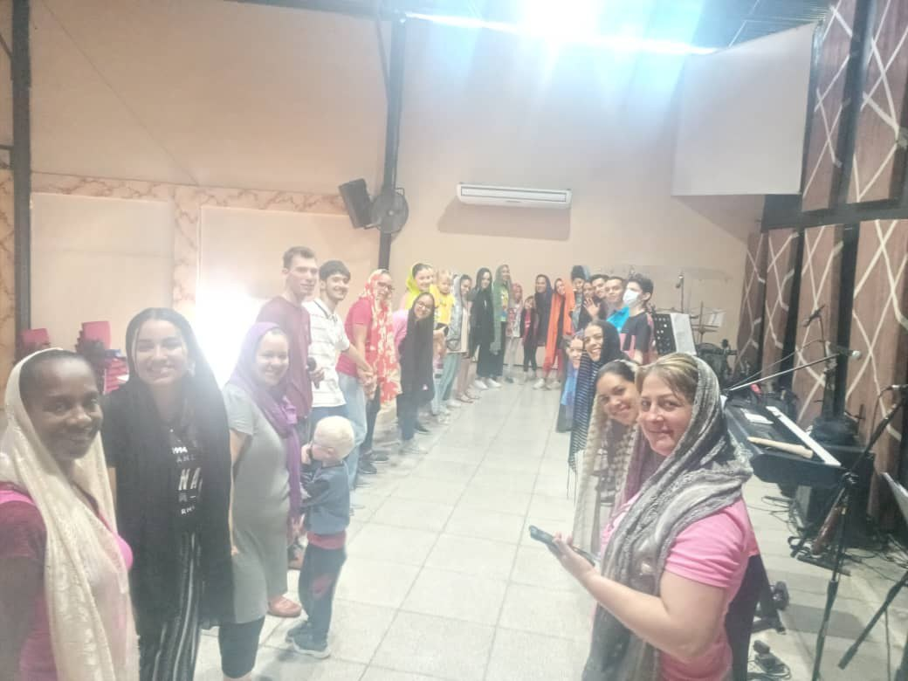
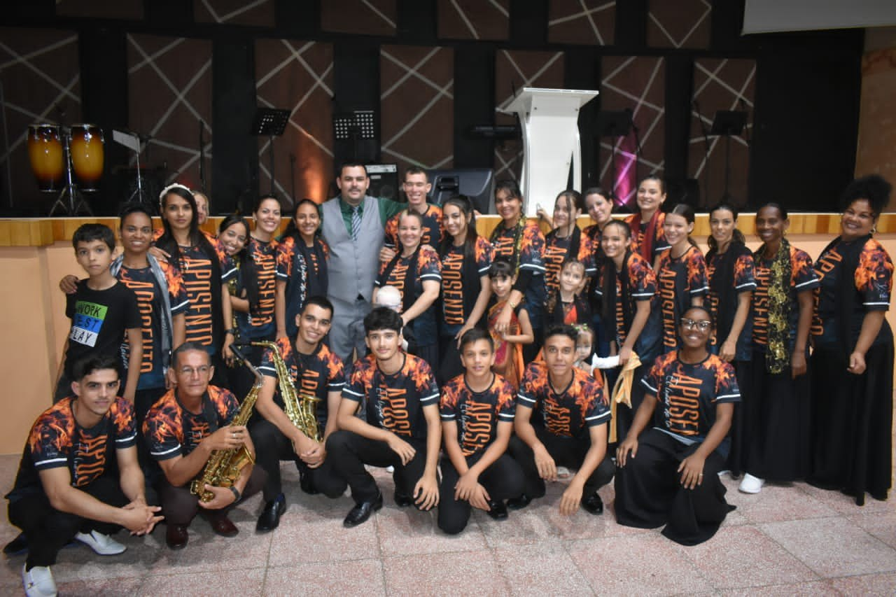
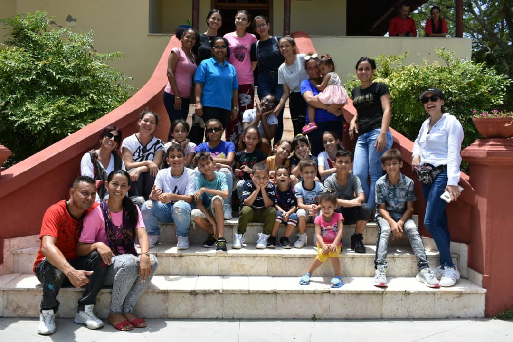
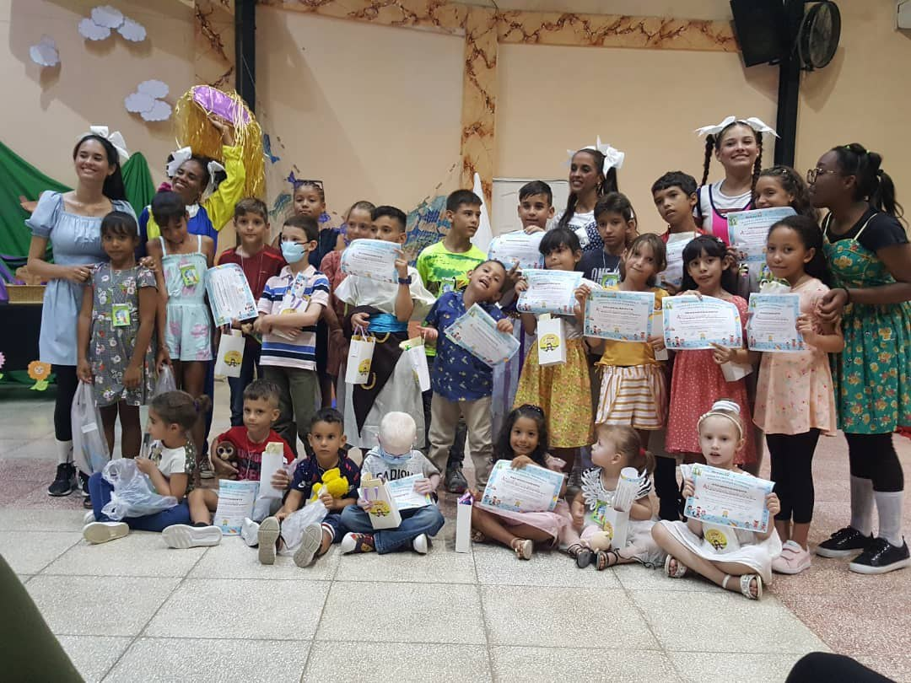
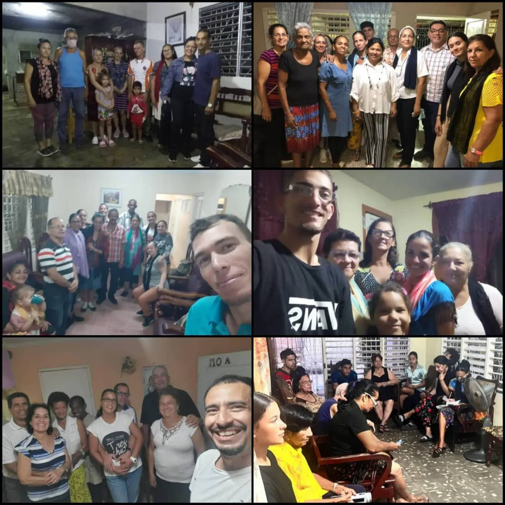
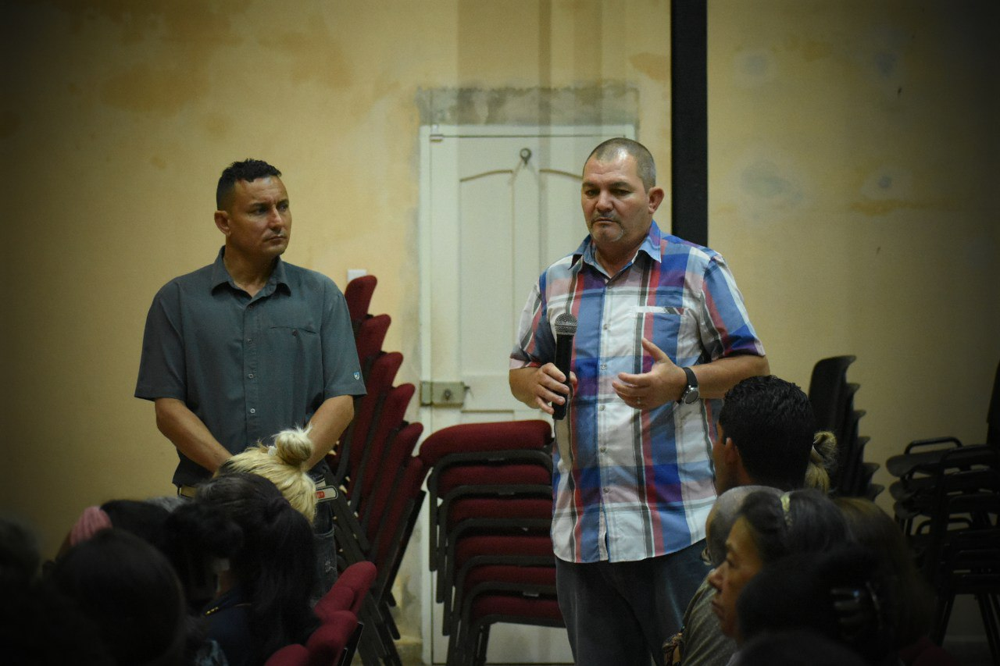
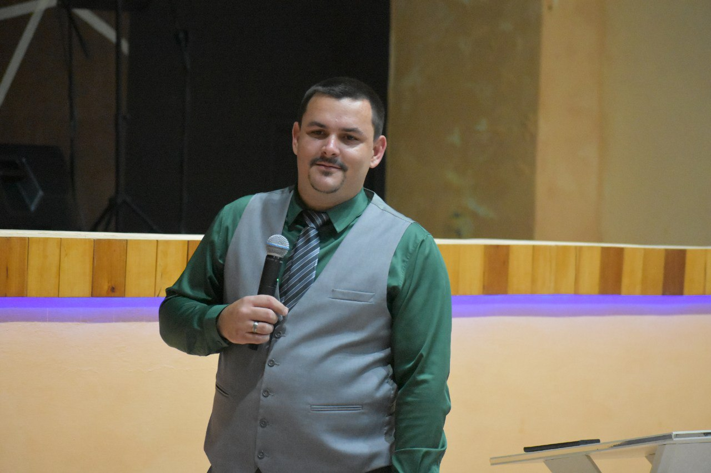
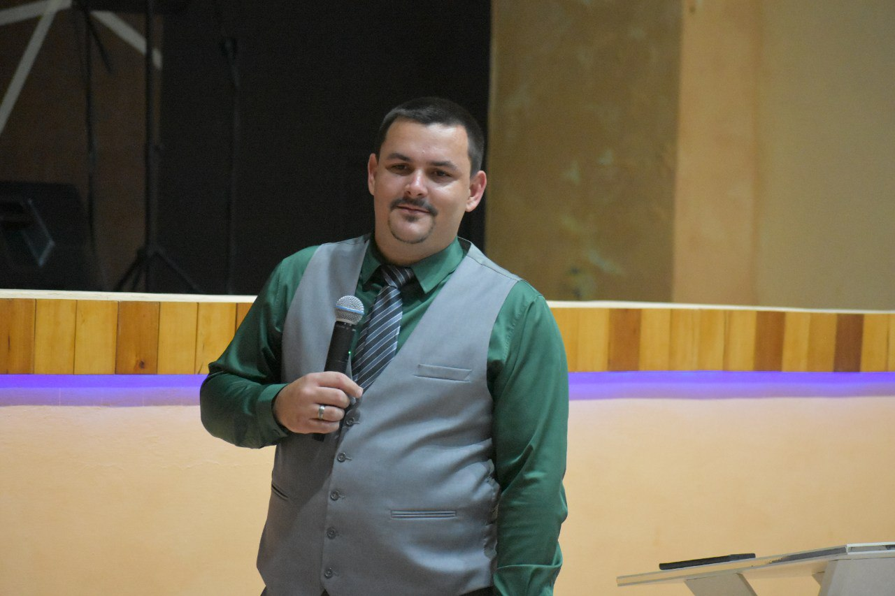

 La alabanza y la adoración es una de las cosas en que más nos deleitamos y cuidamos en nuestra iglesia. Adulam es el encargado de provocar, de llevar, promover en cada servicio la alabanza y la adoración. Tienen la responsabilidad de en cada servicio ser esa punta de lanza que mediante la ministración del gozo que ha sido derramado en ellos por el Espíritu Santo toda la iglesia seamos propicios a adorar, alabar y exaltar el nombre del Señor. No tienen una tarea fácil, pero han contado con las enseñanzas y la guianza de nuestros padres espirituales Juan y Lisney en todos los sentidos.
16 Después de esto volveré,
y reedificaré el tabernáculo de David que ha caído.
Y reedificaré sus ruinas,
y lo levantaré de nuevo,
17 para que el resto de los hombres busque al Señor,
y todos los gentiles que son llamados por mi nombre,
18 dice el Señor, que hace saber todo esto desde tiempos antiguos.
Hechos 15:16-18 La Biblia de las Américas

 El área de niños es una de las más cuidadas en nuestra casa. Los ancianos José Millán y Elizabeth Márquez junto con las maestras del área de niños son los encargados de velar por los más pequeños de casa, enseñarles los caminos del Señor e instruirlos en la palabra, creyendo fielmente que cuando instruyamos al niño en los caminos del Señor aún cuando sea grande no se apartará de él.
Jesús dijo: Dejad a los niños, y no les impidáis que vengan a mí, porque de los que son como estos es el reino de los cielos.
Mateo 19:14 La Biblia de las Américas

 Somos una casa que tiene el privilegio de contar con casas de discipulado cuyo uso es exclusivo para compartir la palabra, instruir, redarguir, aumentar nuestro conocimiento de la palabra, derribar paradigmas, y grabar en cada uno de nosotros la importancia de leer la palabra, de nutrirse todos los días. Reconocemos y proclamamos la importancia de en estos tiempos vivir de acuerdo al diseño de Dios, según lo que está escrito en la palabra pues escrito está que aún los escogidos si fuere posible serían engañados. Por lo que en estos tiempos lo que debemos evidenciar como cristianos es la fidelidad, fidelidad a Dios, a su casa, obediencia, aunque estemos en tiempos difíciles tenemos que tener gozo cuando pasemos por diversas pruebas, porque las pruebas está escrito que son necesarias, no son con el objetivo de que fallemos, de que caigamos, pero si lo hacemos abogado tenemos para con Dios, el único mediador entre Dios y los hombres, CRISTO JESÚS HOMBRE son con el objetivo de despertar algo nuevo en nosotros, renovarnos, es necesario de que a través de las pruebas entremos en el reino de Dios. Lo que nos va a dar conocimiento para poder superar las pruebas es la palabra de Dios.
El servicio a Dios es una de las cosas que tenemos muy en alto en nuestra casa, enseñamos y creemos que el servir a Dios independientemente de una posición es un privilegio. Ejercemos con confianza nuestro sacerdocio, el cual Jesús vino a traer, el sacerdocio del orden de Melquisedec. En el cual ya no hay que ir a un templo físico a sacrificar por nuestros pecados, ahora nosotros somos ese templo del Espíritu Santo, y el sacrificio por nuestro pecado fue nuestro amado Señor. Ahora ya no tenemos que sacrificar animales, ahora nosotros somos ese sacrificio vivo para nuestro Dios, ya no tenemos que sacrificar animales, sólo nuestras vidas en su totalidad. Ahora ya no hay un sumo sacerdote levítico, sino que Jesús es el sumo sacerdote del orden de Melquisedec, y nosotros somos una nación santa, real sacerdocio. Ahora la mujer, la cual en el antiguo testamento no podía ejercer sacerdocio puede ejercerlo en este periodo de tiempo de la gracia, y para los que creen que no
MUJER SE ESCRIBE CON M DE MELQUISEDEC.
Y todo lo que hagáis, hacedlo de corazón, como para el Señor y no para los hombres, sabiendo que del Señor recibiréis la recompensa de la herencia. Es a Cristo el Señor a quien servís.
Colosenses 3:23-24 LBLA

NUESTROS COMIENZOS.
NUESTROS PADRES ESPIRITUALES Juan y Lisney edificaron lo que hoy es Iglesia de Cristo el Tabernáculo hace 12 años, cuando recibieron el llamado de pastorear con amor y sabiduría, lo que a día de hoy desde Ebenezer Tampa siguen haciendo con la ayuda de Dios.
Nuestro ministerio tuvo un comienzo glorioso, en todo momento nuestros padres innovaban nuevas maneras de sorprender a Dios y cada vez más personas se sumaban a la iglesia, pero no todo fue fácil. Hubo personas que no se centraron en vivir una realidad en Dios y apenas sentían que un culto no había sido como ellos querían se iban. De esa manera muchos se fueron en pos de lo que ellos querían y abandonaron las enseñanzas de la sana doctrina que siempre hemos enseñado y enseñaremos.


NUESTROS PADRES ESPIRITUALES.
Juan y Lisney de Font pastorearon con amor y sabiduría Iglesia de Cristo el Tabernáculo por más de 10 años, y antes de irse para continuar su legado en la Iglesia de Cristo Ebenezer Tampa engendraron muchos hijos aquí en Cuba. Los cuales a día de hoy los reconocemos como nuestros padres espirituales y siempre inculcamos la importancia de reconocer paternidad y estar bajo cobertura.
 
